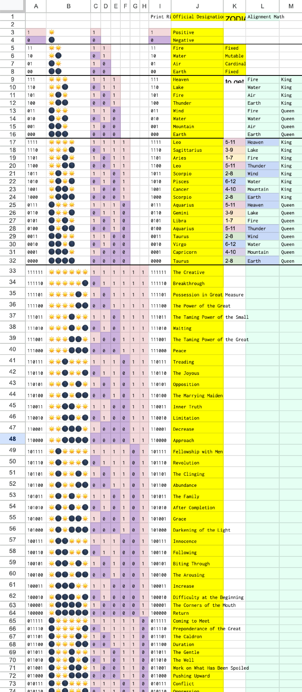
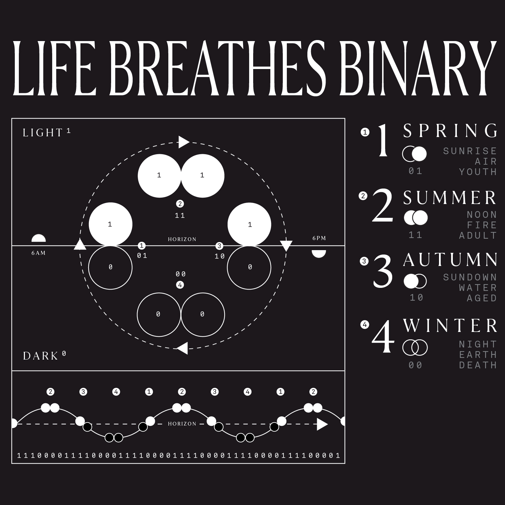

A Bridge to the Unconscious
2018, #
1.
Approach — A Common Point of Reference — 0 and 1 as Night and Day
Using opposites as a structural analogy for the cosmos is an ancient, global pattern. Good and Evil, Right and Wrong, Night and Day, Light and Dark. Dialectic Monism is described as an understanding of the universe as a single energetic field that is split in two as a condition of having a first person experience. Which is to say, I and Other as energetically identical, experienced otherwise. Feynman might say we're all swimming in the same electromagnetic pool.
Electrons and Protons, Positive and Negative, On and Off, the smallest possible units of both matter and logic. Stack a trillion binary states and you're describing a computer. Stack and transform another trillion and we start to worry if the computer might have qualia. Enter the stacks of any library and you’ll find countless thesis, books, arguments for the importance and substance of these binary states expressing themselves throughout academic and philosophical discovery..
Light and Dark, Positive and Negative, Yes and No, the smallest possible units of both religion and spirituality. Dualities have been considered reflective of internal and external realities since our first written books. Conscious and Unconscious, Centralization and Decentralization, Sun and Moon, Groom and Bride, these are analogous equivalents.
Thus, we are in the interesting position and opportunity of using the same symbols to describe both logical and mystical processes. The 0 and 1 contain both rational and divine importance. It appears as though societies of the past understood and mechanized this overlap as a means to facilitate communication between the Conscious and Unconscious.
My hope and intention in proving this theory will be through displaying the self-evidence of a digital to existing ancient systems, such as Astrology, Tarot, and the I Ching.

2.
Foundation — Light as Universal Language
How can the Left speak with the Right, the Ego with Mystery? By what means can a language be established? What symbols are on speaking terms with chaos? In order for there to be common language there must be common symbol, for there to be common symbol it must be assigned to common experience. And so, what are the shared units of not just experience but symbolic association that both the human and the universal could draw from to communicate?
A quick note on foolishness: Given that the Moon, the Feminine, the Divine, the Goddess, is by definition mysterious and undefinable, the nature of this challenge is from the outset quite foolish, and masculine, and patronizing. Which of course, It Is. This is Parcival speaking, this is the pursuit of the grail, as far as I can tell, the holy work of the masculine is to pursue and find balance with the holy feminine. The feminine does not pursue, it is against her nature, THEREFORE if Peace is to be Attained, it is the responsibility of the masculine to Try Anyway.
The unconscious/darkness/moon/0 seems to define the parts of us we do not control. The air we share, the sunlight we're built of, the food we eat from, the natural processes billions of years in the making - the mass intelligences of which we are aspects and that by definition are outside of our awareness. Mystery is that which is outside the boundaries of our experience, it is partner sized, planetary sized, solar-system sized, big bang sized. If She speaks at all, what units would feel recognizable to Her?
For its own part, the rational Mind has no trouble jumping into symbols and building a bridge, itself being largely comprised of symbols, and so we need not worry too much about its ability to participate in our language. However, we can probably say a few things about the idealized masculine symbols. They are actionable, replicable, and capable of beauty or directed focus. Capable of deriving pattern, recursion, elegance, aesthetics, entertainment from a loop of its own self, the ability to compliment action on action on action instantiated in form.
In summary, in order to establish communication between the unfathomable depth of feminine wisdom and the actionable self that is the masculine ego, we must discover or design a language built of symbols foundational enough to be recognizable by both self and the non-self of which we are an aspect.
Now, let us make an argument for the holiness of the sunrise.
On this earth, over its billions of years, a common experience we can assign to all form and pattern before or since, is that it has all shared in the Light and the Dark. The Sun and its Absence. Heat and Cold. Cycles of life-giving light hitting us on a cyclical basis in this goldilocks zone of perpetual miracle. Across all this time we can say for certain that even the rocks had beautiful Sunrises and Sunsets. Our air, our continents, our forests, our ancestors have delighted in the dance of the noonday sun and midnight moon for as long as the Earth has been.
Learn to see One not just as Number - but as deep time has seen it, as the joy one feels coming out of a frozen morning and feeling the light warm your bones. Light is Life, Light is Growth, Sun is Action, 1 is Light. Learn to see Zero not just as number. Dwell in the awe of the yawning sunset, the end of effort, getting lost in the embrace of your loved ones as your mind shifts under the stars. Darkness is Rest, Darkness is Healing, Moon is Home, 0 is Darkness.
3.
DIY Translation of the code. Developing the Tech.
...to be continued...
| Binary | 01 | 11 | 10 | 00 | |||
|---|---|---|---|---|---|---|---|
| Phase | ğŸŒ‘â†’â˜€ï¸ | ☀️→☀️ | ☀️→🌑 | 🌑→🌑 | |||
| Element, Season, Time, Self |
Air, Spring, Dawn, Mind |
Fire, Summer, Noon Will |
Water, Fall, Dusk Heart |
Earth, Winter, Night Body |
|||
| Modality | Cardinal (Start) |
Fixed (Strong) |
Mutable (Fluid) |
Fixed (Strong) |
|||
| 01 | ☀️→🌑 | Air, Spring, Dawn, Mind |
Cardinal (Start) |
0101 Libra = Start Mind |
0111 Aries = Start Will |
0110 Cancer = Start Heart |
0100 Capricorn = Start Body |
| 11 | ☀️→☀️ | Fire, Summer, Noon Will |
Fixed (Strong) |
1101 Aquarius = Strong Mind |
1111 Leo = Strong Will |
1110 Scorpio = Strong Heart |
1100 Taurus = Strong Body |
| 10 | ☀️→🌑 | Water, Fall, Dusk Heart |
Mutable (Fluid) |
1001 Gemini = Fluid Mind |
1011 Sag = Fluid Will |
1001 Pisces = Fluid Heart |
1000 Virgo = Fluid Body |
| 00 | 🌑→🌑 | Earth, Winter, Night Body |
Fixed (Strong) |
0001 Aquarius = Strong Mind |
0011 Leo = Strong Will |
0010 Scorpio = Strong Heart |
0000 Taurus = Strong Body |
 